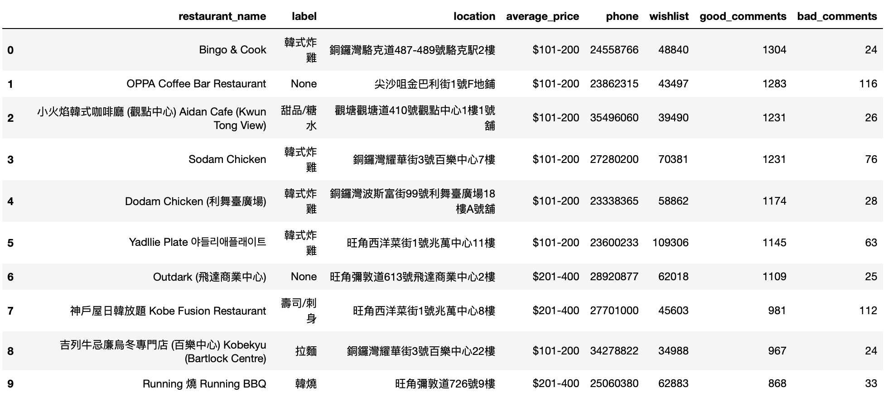
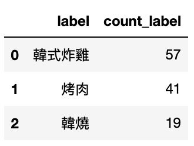
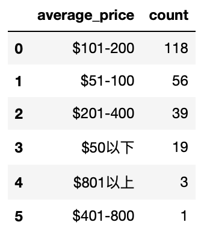
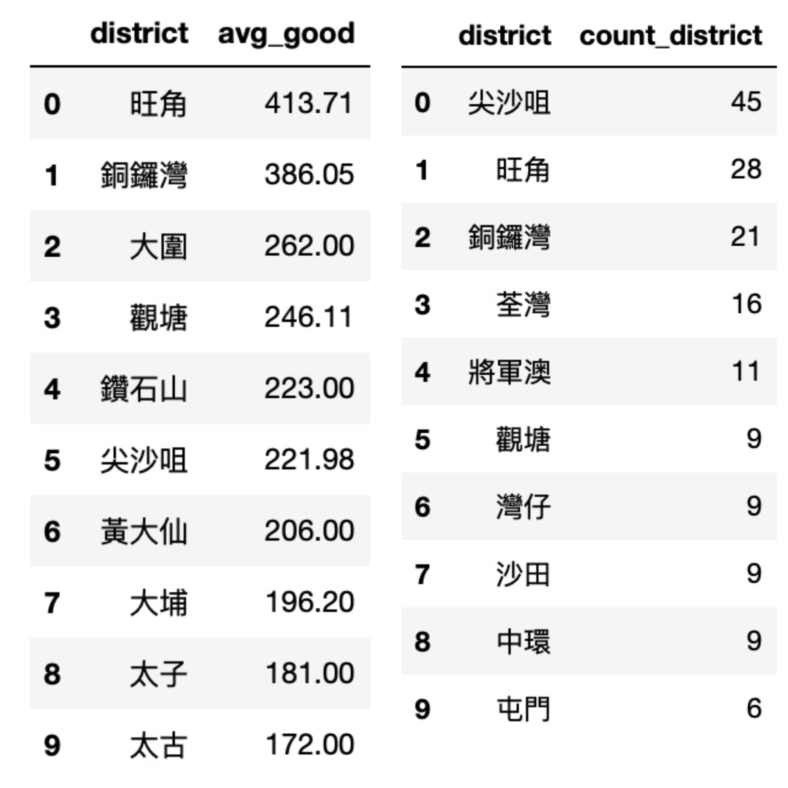
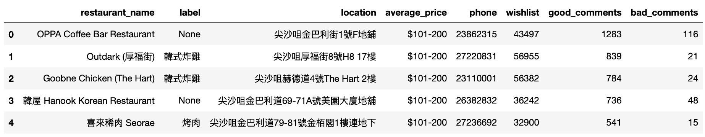
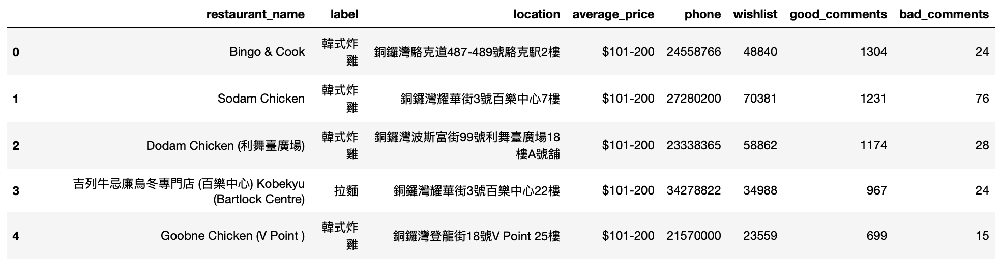
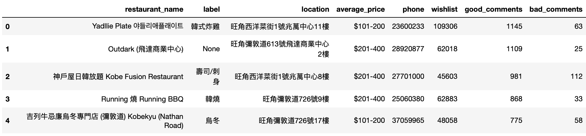
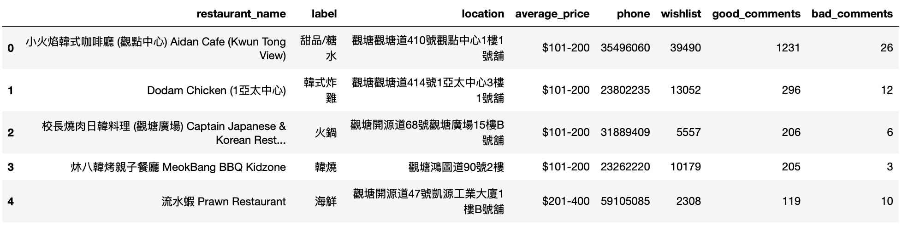

Jenni
Korean Restaurants in Hong Kong
If you want to try some Korean food which are widely acclaimed in Hong Kong, maybe you can first check the information of the 10 restaurants listed below. Among all the Korean restaurants here, they received the largest number of good comments.
1. The top10 Korean restaurants with the largest number of good comments
If you want to try some Korean food which are widely acclaimed in Hong Kong, maybe you can first check the information of the 10 restaurants listed below. Among all the Korean restaurants here, they received the largest number of good comments.
2. What are the most popular types of Korean food here?
Here are the top3 labels of the restaurants. If you are a fan of fried chicken or Korean barbecue, there is a great chance that you will find an ideal Korean restaurant.
3. Is the price acceptable?
The price per person of Korean restaurants in Hong Kong are mostly from 51-200, I suppose it is a normal price students can afford. Having fun in Korean restaurants perhaps won’t make you go bankrupt.
4. Which district should I go if I want to taste Korean cuisine?
On the left, you can see the district with the restaurants which have the most average good comments. On the right, you can see the number of Korean restaurants in each district. I suggest the best district to taste Korean food to be 尖沙咀/旺角/銅鑼灣/觀塘 as they appeared in both lists.
5. The top5 Korean restaurants with the largest number of good comments in the 4 districts
   6. Come to see some recommendations!
Do you feel the simple label classification cannot satisfy your need for finding typical food in Korean restaurant? Come to see this! These are the key words in the recommendations of the restaurants. Now, in addition to fried chicken and barbecue, we see 芝士/牛肋骨/雞湯/泡菜.
All the certain restaurants listed have their phone number in the form. If you are interested, please don’t hesitate to call them to ask more questions or make a reservation!
If you find anything to add/ask/correct about the webpage content, please contact me by sending emails to sunlingxiang910@163.com. I will be beyond happy~